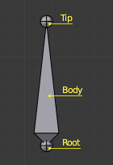

结构¶

骨骼的组成.¶
骨骼有3个基本元素:
"开始的关节 "叫 首端(root) 或 头部(head) 。
“body(身体)”部分是骨骼的主体。
“结束关节” 部分叫 顶端(tip) 或 尾端 (tail) 。
在编辑模式选择默认的骨架，在这个模式你可以选择首端( root )和尾端(tip), 像操作网格顶点一样移动它们。
首端( root )和尾端(tip)(也叫“关节”) 它们各自的位置定义了骨骼。
它们都有半径属性, 但只在封套变形模式下有用 (见下文)。
Roll 旋转轴¶
勾选在 面板下的 轴向 选项, 将会在每根骨骼的尾端显示局部坐标轴. Y轴总是从根部沿着骨骼指向尾端.所以Y轴都叫骨骼的旋转轴。
骨骼的影响¶

在编辑模式，以封套(Envelope)模式显示的骨骼。¶
基本上，一根变形骨骼控制着 "跟随" 骨骼的网格顶点组. 就像当你移动手指时你的手指肌肉和皮肤跟随你的手指骨。
要做到这一点，你必须定义骨骼在某个顶点上的 influence影响 的强度。
最简单的方法是每根骨骼影响给定的几何体范围. 叫 封套技术(envelope technique),因为每根骨骼仅仅能够影响它 "封套几何体" 范围的区域。
如果一根骨骼以 封套Envelope显示 , 在 编辑模式 Edit mode 和 姿势模式Pose mode 你可以看到它的影响范围, 这取决于：
距离(distance ) 属性
首端和尾端的半径。

在姿势模式骨骼的封套显示。¶
所有的参数和更深入的细节都在 skinning pages 有讲解。